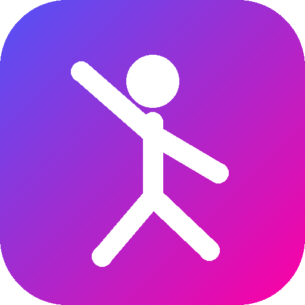

JD Controller
Mando, cámara y voto para jugar en JDCStudioTape. El móvil y el PC tienen que estar en la misma Wi-Fi.
PC en tu Wi-Fi
Buscando…
Otras formas de entrar
En el PC: «Jugar mapa» › «Jugadores y mandos» › «Móvil» muestra la IP, el QR y el enlace para jugar online.